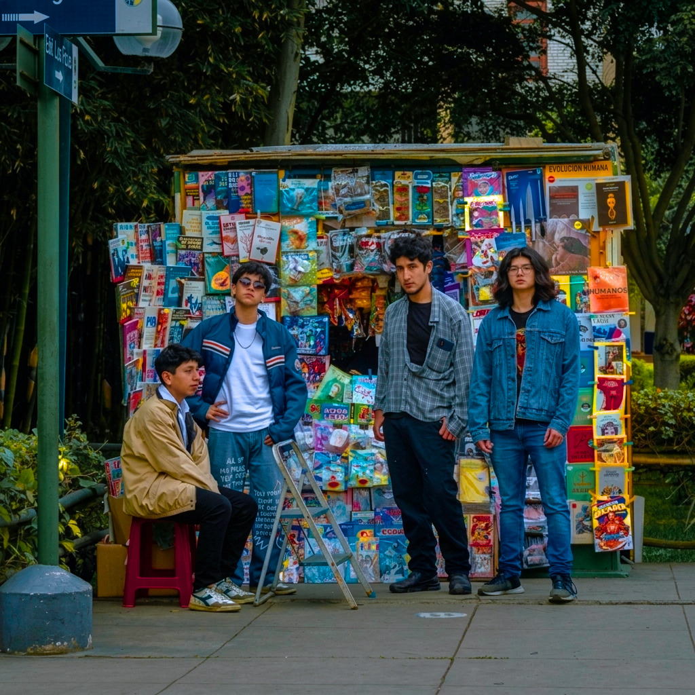
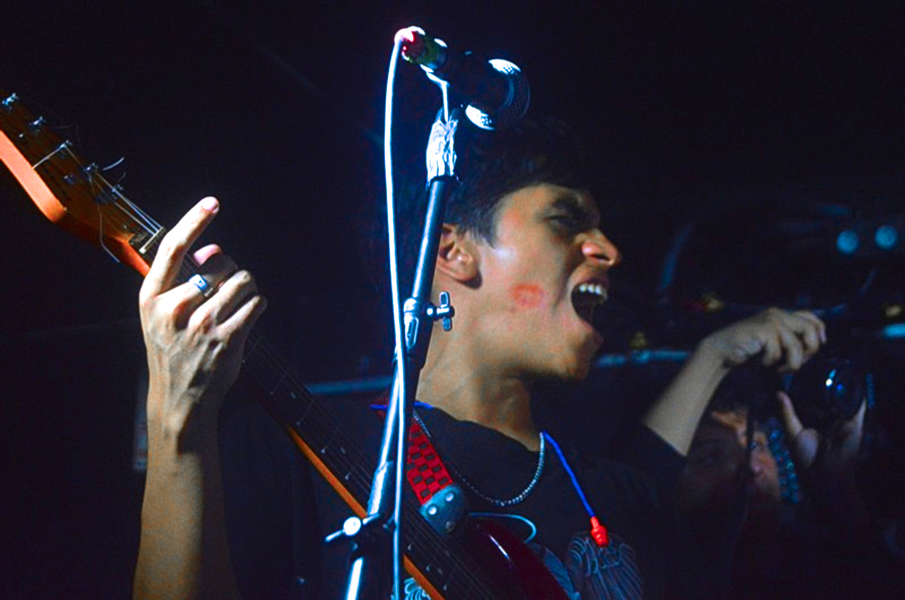
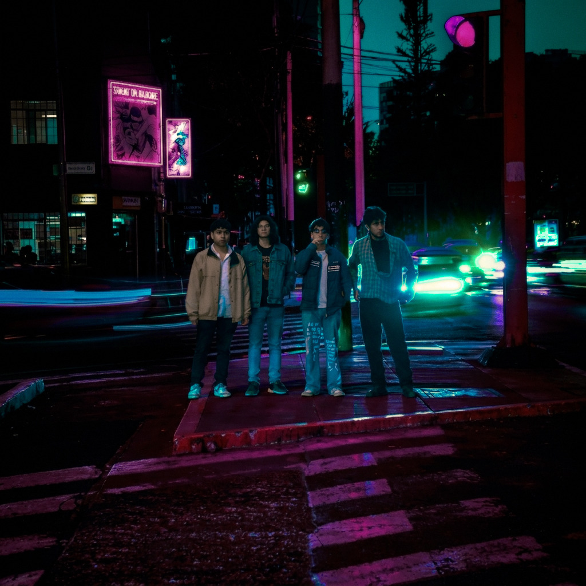
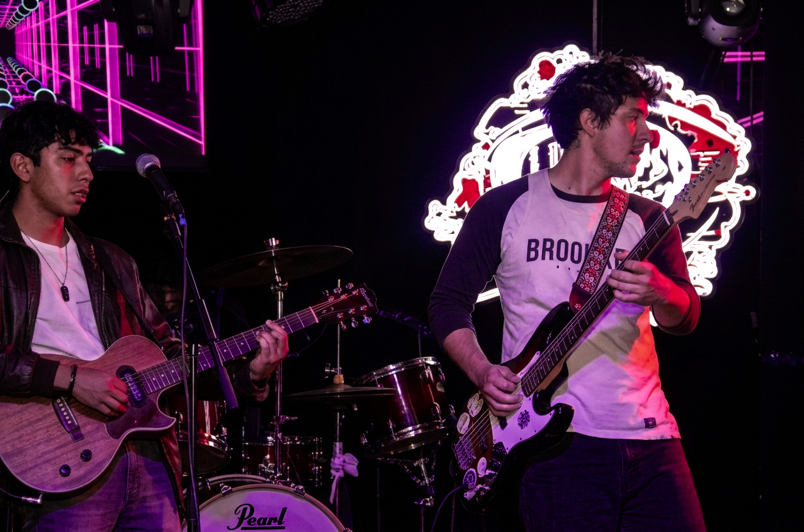
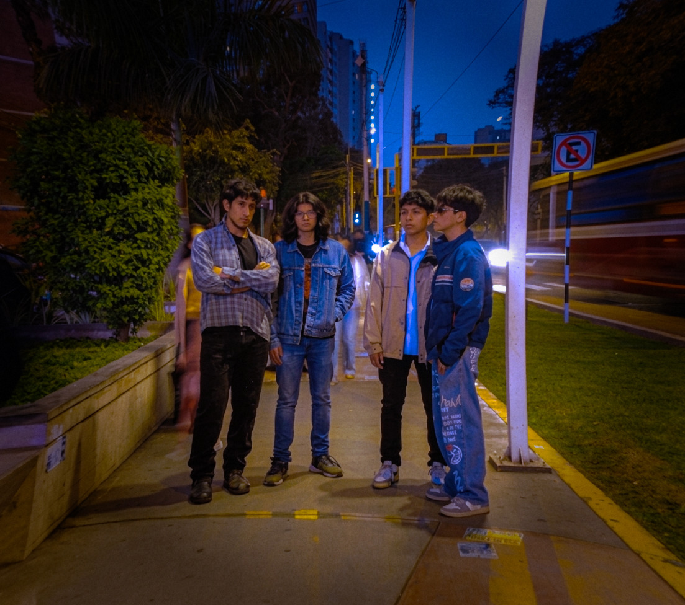

Los Voyagers
- Desde
- Lima, Perú
- Género
- Rock alternativo
- Banda
- 4 integrantes
- Singles
- Vuelvo · Decidido
Rock desde Lima. Perderse y volver.




elige tu plataforma y escúchanos
Dale play aquí mismo, guarda las canciones en tu biblioteca y síguenos en tu app.
Se abre la canción en tu app. Toca ＋ para guardarla o ··· → Añadir a playlist.
Con tu cuenta iniciada, el botón ＋ del reproductor la agrega a tu biblioteca.
En YouTube, Guardar lo agrega a una de tus playlists.
Cada planeta es una plataforma. Tócalo y escúchanos. El disco del centro suena.
Pasa por las fotos en vivo y se prenden las luces del escenario.


¿Te suena?
Llévanos a tu escenario.
La banda ya aterrizó. Escríbenos y armamos la próxima tocada.
_
Productores, venues y festivales: escaneen el pase o escríbannos directo.